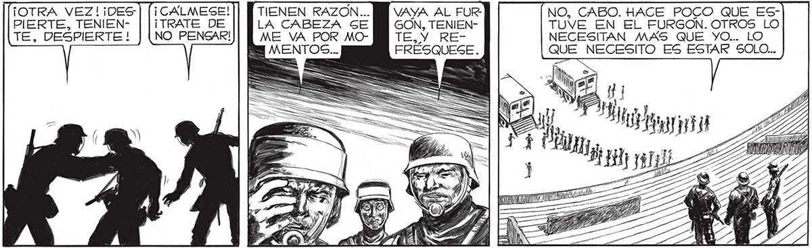

124 ¿QUÉ LE PASA, TENIENTE2 ===> ¡DESPIERTE! ¿CON QUIÉN |ESTABA HABLANDO? [— Í NO SE... ME PARECIO DE PRONTO SEGURO QUE ES EL CANSANS QUE MOSCA ERA OTRO..UN AMI- CIO... USTED HA ESTADO EN GO... QUE MURIO AL PRINCIPIO DE COMBATE MAS QUE NINGÚN LA NEVADA... DEBE SER EL CAN- OTRO... PERO, POR EAVOR,TEESF === | |NENTE, TRATE DE DOMINARSE... RÉCUERDE LA ORDEN... ... DEL MAYOR... CUALQUIERA PUEDE PEGARLE U “a MOSS Y A SAS y) N NUS TENIENTE? ISS 5 NIN = ¿QUE TAL? a | S ZII TF TZ > E Y ¡OTRA VEZ! ¡DES | [¡CALMESE! TIENEN RAZON... BB VAYA AL FUR- NO, CABO. HACE POCO QUE ESPIERTE, TENIEN- ¡TRATE DE LA CABEZA SE GON, TENIEN- TUVE EN EL FURGON. OTROS LO E, PESPIEXTE 1 NO PENSAR! ME VA POR MO- TE, Y RE- NECESITAN MAS QUE YO... LO a FRESQUESE. QUE NECESITO ES ESTAR SOLO... YA ME PASARÁ. MOSCA TIENE RAZON : LO MEJOR ES NO PENSAR... LO MEJOR ES NO PENSAR... ETE 147 A A pun DAA, q pS A
